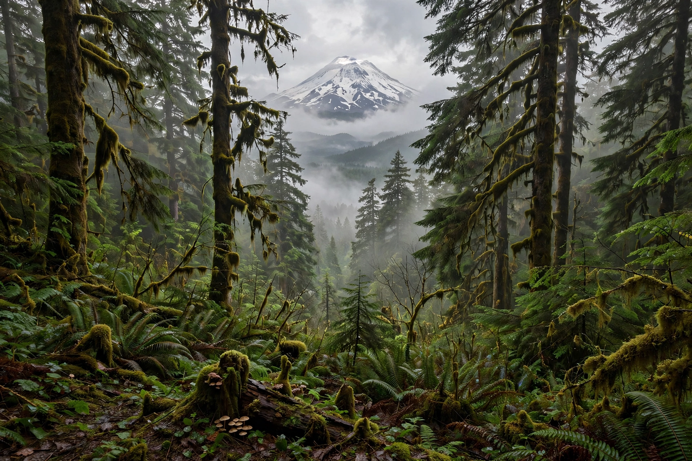

| Pacific Northwest | |
|---|---|
 | |
| Countries | United States, Canada |
| States / provinces | Washington, Oregon, Idaho, British Columbia |
| Largest cities | Seattle, Vancouver, Portland |
| Major ranges | Cascade Range, Coast Mountains, Olympic Mountains |
The Pacific Northwest (PNW) is a geographic region in northwestern North America bounded by the Pacific Ocean to the west and, loosely, by the Rocky Mountains to the east. It generally includes the U.S. states of Washington, Oregon and Idaho and the Canadian province of British Columbia. The region is known for its temperate rainforests, rugged coastline, and the volcanic peaks of the Cascade Range, including Mount Rainier and Mount St. Helens.
The Pacific Northwest has been inhabited by Indigenous peoples for millennia; groups such as the Coast Salish, Chinook, and Haida developed complex societies supported by salmon fishing. European exploration began in the 18th century, and the Oregon Country was jointly occupied by Britain and the United States until the Oregon Treaty of 1846 fixed the border at the 49th parallel.
The region's climate west of the Cascades is oceanic, with wet winters and dry summers; the mountain crest traps moisture, producing some of the wettest temperate rainforests in the world in the Olympic Peninsula and the coast of British Columbia. East of the Cascades the climate is semi-arid steppe and high desert. Major rivers include the Columbia, the Fraser, and the Snake.
The Pacific Northwest is associated with outdoor recreation, coffee culture, and the technology industries centred on Seattle and the Puget Sound. In music, the region produced the grunge movement of the late 1980s and early 1990s, when Seattle bands such as Nirvana, Pearl Jam, Soundgarden and Alice in Chains achieved worldwide fame. The broader cultural region is sometimes called Cascadia, also the name of a proposed bioregional movement.
Cascadia (bioregion) · Seattle · Columbia River · Cascade Range
From Wikipedia, the free encyclopedia (recreated from memory).